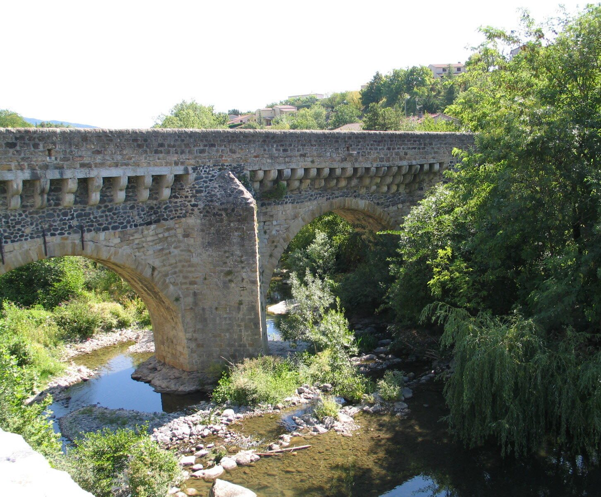

Privas, de hoofdstad van de Ardèche, ligt op slechts 10 minuten van Les Cabritas: dichtbij genoeg voor een avondje uit of een ochtendmarkt zonder uw vakantieplannen in de war te sturen. De stad, ooit een protestants bolwerk, draagt onder haar nu vredige sfeer nog de sporen van een woelige geschiedenis.

Een herbouwd protestants bolwerk
Privas werd in de 17e eeuw met de grond gelijkgemaakt na een beleg dat nog altijd beroemd is in de geschiedenis van de stad, en werd grotendeels herbouwd, maar het oude centrum bewaart nog verschillende herinneringen aan die tijd: de Pont Louis XIII, een opmerkelijke beschermde brug die tot de 12e eeuw zou teruggaan, de Tour Diane de Poitiers, de Porte aux Diamants en het klooster van de Récollets.
De hoofdstad van de marrons glacés
Privas is erkend als 'Site Remarquable du Goût' vanwege zijn traditie rond de tamme kastanje en heeft generaties lang een reputatie opgebouwd als hoofdstad van de marrons glacés (gekonfijte kastanjes) en kastanjecrème. Verschillende ambachtelijke producenten houden dit vakmanschap in het hart van de stad levend.
Goed om te weten voor uw bezoek
Elke woensdag- en zaterdagochtend vult een markt de Place de l'Hôtel de Ville, met veel streekproducten. Omdat Privas zo dicht bij Flaviac ligt, leent het zich zowel voor een echt uitje als voor een snelle boodschap of een lunch tijdens uw verblijf. De stad is ook een goede uitvalsbasis om een ochtend winkelen of markt te combineren met een middagwandeling rond Fort Mahon of de grotten van de Jaubernie.
Praktische informatie vanuit Les Cabritas
- Afstand vanaf Flaviac: ongeveer 10 min rijden
- Beste periode: het hele jaar, markt op woensdag- en zaterdagochtend
- Ideaal voor: een stadswandeling, lekker eten, lokale markt
Zin om Privas te ontdekken vanuit uw vakantiehuis in de Ardèche?
Les Cabritas verwelkomt u in Flaviac, in het hart van de Ardèche, voor een comfortabel verblijf met privézwembad, vlak bij de mooiste plekken van de streek.
Beschikbaarheid bekijken